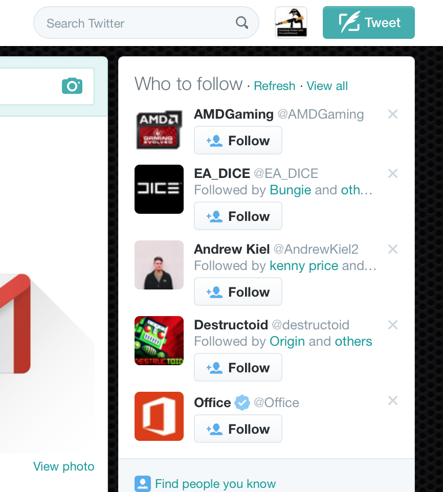
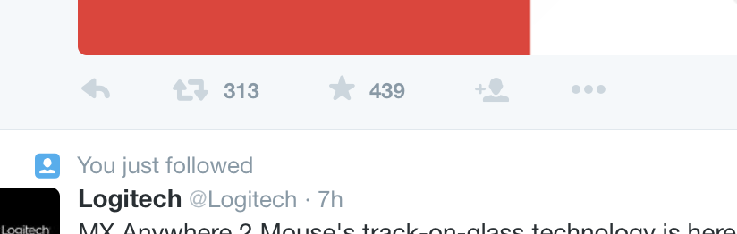
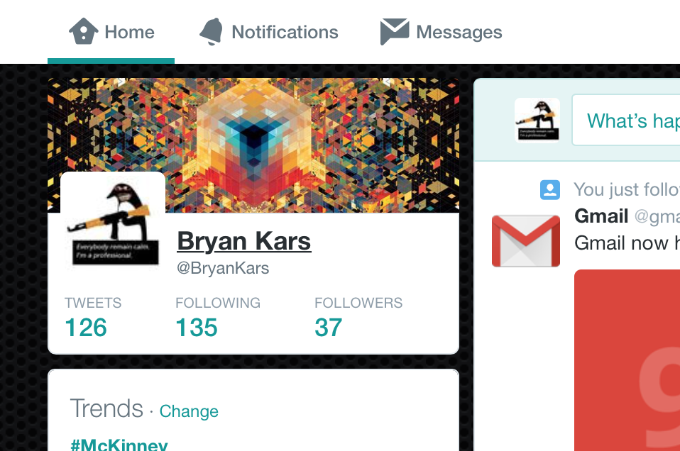
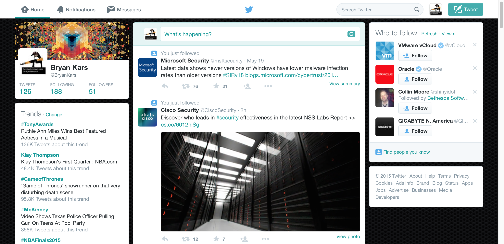
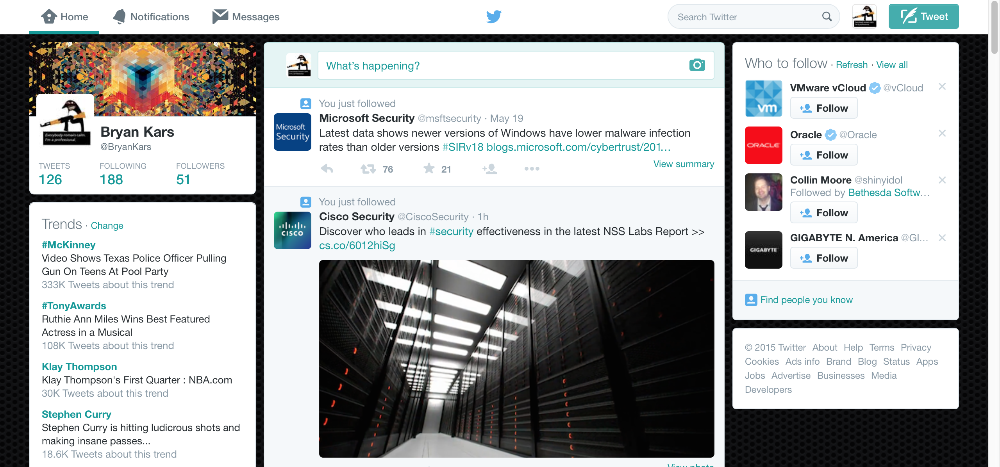
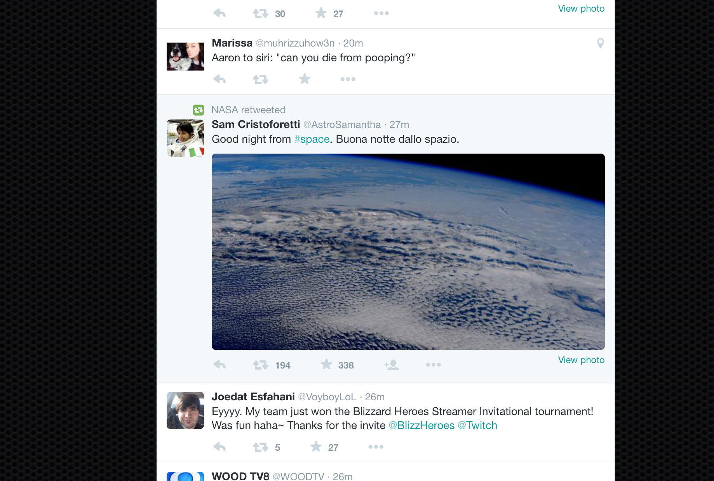

I was asked to pick 5 Principles and find a website/section of a website that it best represents it. I chose the website twitter because of its iconic simplitic style. Twitter is used as an example of a clean well designed website over and over again. They really have simplistic functional design nailed down and continue to improve on it all of the time.
Twitter utilizes Affordance at the professional level. Thier use of buttons and colors helps the user know exactly what is clickable and even gives them a good idea of what it will do without words. The level of thought and detail in the buttons and placement is an industry standard and part of the reason services like twitterbootstrap is so big.
The tweet button is a perfect example of affordance. The contrasted color makes it look clickable and the use of a symbol like a check box tricks the mind into wanting to click it. It is also contrasted in teh corner by itself. The follow buttons are large and attractive and also contrast and stick out bringing in the viewers attention.
The reply, retweet, and favorite buttons here are small and descreete but also obvious in thier function and attractive. Acting as another perfect example of Affordance.
Twitter also utilizes chunking in a professional manner. The Home, Notifications, and Messages buttons are all important sections and located near each other but easily found. Inportant informationa and data about the users profile is also displayed nearby and the Tweets, Following, and Followers are displayed in a logical location easily spotted by the user.
All of the parts of Twitter are sectioned off and appear modular. Small boxes and elements are broken apart viually and though code also. Twitter Bootstrap is based off ot twitter and allows users to combine modules they need to create custom solutions.
Twitters use of the rule of thirds could not be more apparent. If you look at my screenshot you can see it is broken down into 3 distinct thirds with different uses. On the left third is personal info or infomation that has to do with you or trends you may like. The center is the tweets of people you follow, and the right third is who you should follow or info about the wedsite. It breaks twitter up and makes it look very asthetically pleasing.
Twitter pretty much perfects the idea of Signal to Noise ratio. At the top of the webpage it displays specific important account info you may need. But then it cuts the bs as you scroll down and literally only shows you the posts of people and companies you are following. No noise, no ads, no BS.
